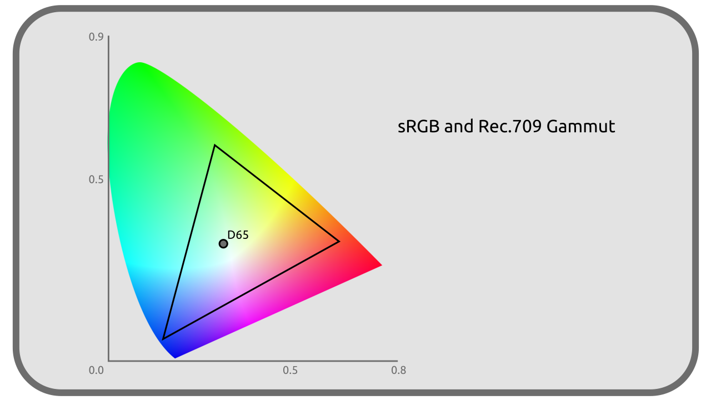
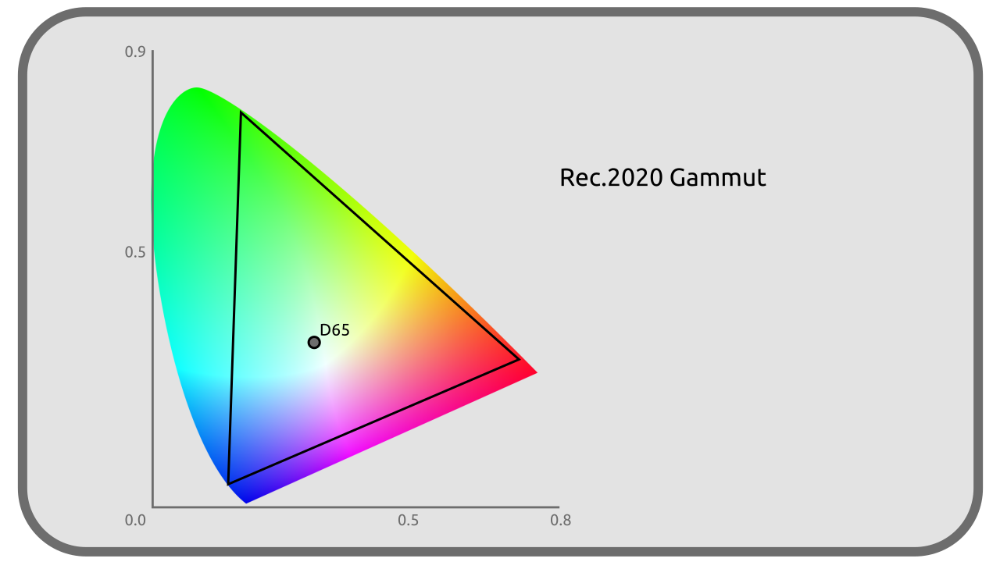

I.I - Liste sélective d’espaces colorimétriques¶
Il ne serait pas possible de lister ici tous les espaces colorimétriques qui existent, mais voici une sélection utile dans la production audiovisuelle en 2021.
sRGB / CIE 61966-2-1 / IEC 61966-2-1¶
Espace d’affichage, display-referred.
Le sRGB (pour standard RGB) est un des espaces les plus courant en informatique ; en effet, c’est celui de la plupart des écrans d’ordinateurs, et est aussi utilisé par extension pour la plupart des formats d’image de manière standard (JPEG, PNG, TGA…).
Il date de 1996.

Primaires¶
Ces primaires sont les mêmes que celles du Rec. 709.
| R | G | B | |
|---|---|---|---|
| X | 0,64 | 0,30 | 0,15 |
| Y | 0,33 | 0,60 | 0,06 |
| Z | 0,03 | 0,1 | 0,79 |
Blanc¶
| Blanc | |
|---|---|
| x | 0,3127 |
| y | 0,3290 |
| CIE | D65 |
| lum. | 80 cd/m² |
Courbe de transfert¶
Le sRGB utilise une courbe de transfert très proche en moyenne d’un Gamma 2.2, avec en réalité un transfert linéaire pour les luminances linéaires inférieures à 0,0031308 puis un Gamma 2,4 décalé.
RGB linéaire¶
Espace de travail, scene-referred.
Le RGB linéaire est une variation du sRGB, en tout point identique sauf pour la courbe de transfert qui est linéaire. Il est utilisé principalement comme espace de travail (scene referred) quand on a besoin d’une meilleure simulation de la lumière (moteurs de rendu, modes de fusion en compositing…) et pour simplifier les calculs. On le retrouve notamment dans les fichiers EXR.
Note
Souvent les logiciels parlent à tort de sRGB linéaire, ou pire, IEC 61966-2-1 linéaire, mais ce n’est pas du sRGB puisque la courbe de transfert est différente.
Rec. 601 / ITU-R BT.601 / CCIR 601¶
Espace d’affichage, display-referred.
Le Rec. 601 est la norme complète pour la vidéo entrelacée de la Télévision Standard Définition SDTV. Il n’est plus utilisé mais servait dans les standards PAL et NTSC.
Sa version PAL est très proche du sRGB.
Primaires¶
| R | G | B | |
|---|---|---|---|
| X (NTSC) | 0,63 | 0,31 | 0,155 |
| Y (NTSC) | 0,34 | 0,595 | 0,007 |
| Z (NTSC) | 0,03 | 0,095 | 0,775 |
| X (PAL) | 0,64 | 0,29 | 0,15 |
| Y (PAL) | 0,33 | 0,60 | 0,06 |
| Z (PAL) | 0,03 | 0,11 | 0,79 |
Note
En PAL, les primaires du Rec. 601 sont très proches de celle du sRGB ; seul le Gx change (0,29 au lieu de 0,3)
Blanc¶
| Blanc | |
|---|---|
| x | 0,3127 |
| y | 0,3290 |
| CIE | D65 |
| lum. | 100 cd/m² |
Courbe de transfert¶
Gamma 2.4.
Rec.709 / UIT-R BT 709¶
Espace d’affichage, display-referred.
Rec. 709 est la norme de la Télévision Haute Définition, HDTV et date de 1990. On le retrouve généralement dans les formats vidéos courant (mp4…)
Il est très proche du sRGB, seule la courbe de transfert change (et son point blanc doit être un peu plus intense).
Primaires¶
Ces primaires sont les mêmes que celles du sRGB.
| R | G | B | |
|---|---|---|---|
| X | 0,64 | 0,30 | 0,15 |
| Y | 0,33 | 0,60 | 0,06 |
| Z | 0,03 | 0,1 | 0,79 |
Blanc¶
| Blanc | |
|---|---|
| x | 0,3127 |
| y | 0,3290 |
| CIE | D65 |
| lum. | 100 cd/m² |
Courbe de transfert¶
Proche d’un Gamma 2,4 ou Gamma 2,35 suivant les recommandations.
Rec.2020 / UIT-R BT.2020¶
Espace d’affichage, display-referred.
Rec. 2020 est la norme de la Télévision Ultra Haute Définition, UHDTV et date de 2012.

Primaires¶
| R | G | B | |
|---|---|---|---|
| X | 0,708 | 0,17 | 0,131 |
| Y | 0,292 | 0,797 | 0,046 |
| Z | 0,0 | 0,033 | 0,823 |
Blanc¶
| Blanc | |
|---|---|
| x | 0,3127 |
| y | 0,3290 |
| CIE | D65 |
| lum. | variable |
Courbe de transfert¶
La même que Rec.709 proche d’un Gamma 2,4, mais plus précise.
DCI-P3¶
Espace d’affichage, display-referred.
DCI-P3 a été créé comme transition vers le Rec. 2020 et pour la projection de films. Il est utilisé par certains téléviseurs et écrans d’ordinateur, et même plus récemment certains téléphones/tablettes.

Primaires¶
| R | G | B | |
|---|---|---|---|
| X | 0,68 | 0,265 | 0,15 |
| Y | 0,32 | 0,69 | 0,06 |
| Z | 0,00 | 0,045 | 0,79 |
Blanc¶
| Blanc | |
|---|---|
| x | 0,3140 |
| y | 0,3510 |
| CIE | N/A |
| lum. | 48 cd/m² |
Courbe de transfert¶
Gamma 2,6
Display P3¶
Espace d’affichage, display-referred.
Le Display P3 est une variation du DCI-P3 adaptée pour être plus proche (et mieux compatible avec) du sRGB (et ainsi fabriquer des écrans capables d’afficher les deux plus facilement). Il garde les primaires (et donc le gamut plus large) du DCI-P3 mais utilise le point blanc et la courbe de transfert du sRGB.
Primaires¶
| R | G | B | |
|---|---|---|---|
| X | 0,68 | 0,265 | 0,15 |
| Y | 0,32 | 0,69 | 0,06 |
| Z | 0,00 | 0,045 | 0,79 |
Blanc¶
| Blanc | |
|---|---|
| x | 0,3127 |
| y | 0,3290 |
| CIE | D65 |
| lum. | 80 cd/m² |
Courbe de transfert¶
Celle du sRGB proche en moyenne d’un Gamma 2.2.
ACES¶
ACES signifie Academy Color Encoding System, et représente un système comprenant 5 espaces colorimétriques conçus par l’Académie des Oscars spécifiquement pour la production audiovisuelle, publié en 2014 pour sa première version.
Ces 5 espaces partagent le même point blanc, proche du D60; ils utilisent deux ensembles de primaires nommés AP0 ou AP1. Les primaires AP0 sont en dehors des couleurs visibles (et donc du CIE XYZ) : elles sont les primaires théoriques les plus proches englobant l’intégralité des couleurs visibles. Les primaires AP1 sont plus proches des primaires habituelles RGB et des écrans et projecteurs, les rendant plus pratiques dans la production des images.

Primaires (AP0)¶
| R | G | B | |
|---|---|---|---|
| X | 0,7347 | 0,0 | 0,001 |
| Y | 0,2653 | 1,0 | -0,77 |
Primaires (AP1)¶
| R | G | B | |
|---|---|---|---|
| X | 0,713 | 0,165 | 0,128 |
| Y | 0,293 | 1,830 | 0,044 |
Blanc¶
| Blanc | |
|---|---|
| x | 0,32168 |
| y | 0,33767 |
| CIE | proche de D60 |
| lum. | infinie |
ACES2065-1¶
Espace de stockage.
ACES2065-1 est l’espace principal du système ACES. Il est conçu pour stocker n’importe quelle information de couleur de manière non destructive et utilisable à long terme avec de futurs nouveaux espaces. Il englobe donc l’intégralité des couleurs visibles et est plus grand que le CIE XYZ. Son usage est surtout théorique.
Il est prévu pour être utilisé dans les images openEXR ou vidéos MXF.
Il est linéaire.
ACEScg¶
Espace de travail, scene-referred.
ACEScg est semblable au ACES2065-1 mais utilise les primaires AP1. Il est prévu principalement pour les moteurs de rendu 3D et le compositing.
Son format de stockage image standard est l’openEXR.
ACEScc¶
Espace de travail, scene-referred.
ACEScc est semblable au ACEScg (avec les primaires AP1) mais utilise une courbe de transfert non linéaire, plus pratique pour la correction colorimétrique et l’étalonnage.
Adobe RGB¶
Espace d’affichage, display-referred et de travail.
Adobe RGB a été conçu en 1998 pour les graphistes travaillant sur écran mais dont le travail est destiné à l’impression. Il est proche du sRGB, mais la primaire verte a été décalée pour englober plus de couleurs pouvant être reproduites en impression CMYK. Sa courbe de transfert est aussi légèrement différente.

Primaires¶
| R | G | B | |
|---|---|---|---|
| X | 0,64 | 0,21 | 0,15 |
| Y | 0,33 | 0,71 | 0,06 |
Blanc¶
| Blanc | |
|---|---|
| x | 0,3127 |
| y | 0,3290 |
| CIE | D65 |
| lum. | 160 cd/m² |
Courbe de transfert¶
Gamma 563/256 soit 2,199 218 75.
Sources et références
- sRGB sur Wikipadia
- Spécifications sRGB sur color.org
- Spécifications BT.601 sur color.org
- Rec. 709 sur Wikipedia
- Spécifications BT.709 sur color.org
- Rec. 2020 sur Wikipedia
- Spécifications BT.2020 sur color.org
- DCI-P3 on Wikipedia
- Spécifications DCI-P3 sur color.org
- ACES on Wikipedia
- acescolorspace.com/